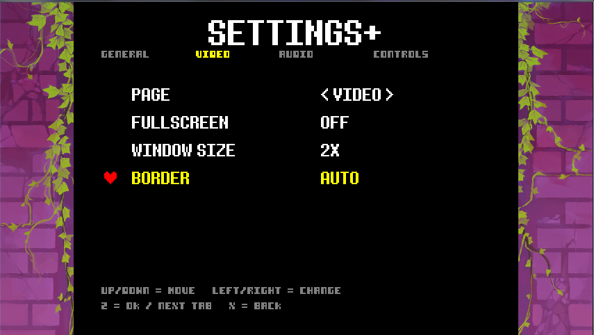
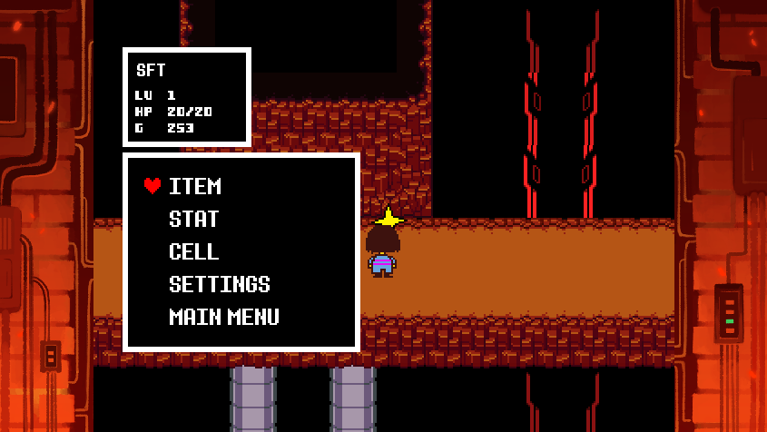

* Current Archive
Two UNDERTALE Mods
The archive now includes the UNDERTALE Debug Menu Port and Settings+, a quality-of-life overhaul for UNDERTALE's settings and C Menu.
OPEN MOD LISTPress Enter, Space, or click to skip.
* A small archive has appeared.
A dedicated UNDERTALE mod sub-site for sonicFanTech projects. The main page changes its background and character placement each time you come back to it.
* Current Archive
The archive now includes the UNDERTALE Debug Menu Port and Settings+, a quality-of-life overhaul for UNDERTALE's settings and C Menu.
OPEN MOD LIST* Latest Release
Adds a tabbed settings menu, audio sliders, window options, real border support, and in-game C Menu shortcuts.
VIEW SETTINGS+* Patch Reminder
These downloads are mod packages and patch scripts. They do not include UNDERTALE itself, data.win, or a pre-patched copy of the game. Keep a clean backup before using UMT.
* Latest Mod
A useful settings menu overhaul for UNDERTALE. It replaces the basic settings screen with tabs, adds in-game Settings access, adds a Main Menu shortcut, and saves new options into UNDERTALE's normal config file.

* Available Mod
A classic UNDERTALE/GameMaker version of sonicFanTech's DELTARUNE Debug Menu mod, rebuilt without the GMS2-only parts.
* Overview
Settings+ upgrades UNDERTALE's basic settings room into a more useful tabbed menu. It also adds SETTINGS and MAIN MENU entries to the in-game C Menu, so you can change options or return to the title without closing the game.
* Included

* Quick Install
* Config
Settings+ writes its options to UNDERTALE's normal local settings file:
C:\Users\YOURNAME\AppData\Local\UNDERTALE\config.ini
Use SAVE CONFIG inside Settings+ after changing options you want to keep.
* Overview
This mod is the UNDERTALE/classic GameMaker port of sonicFanTech's DELTARUNE Debug Menu project. It keeps the usable debug systems while removing the GMS2-only features that do not fit UNDERTALE.
* Included
* Quick Install
* Quick Controls
* How to install
* Settings+ Install
* Debug Menu Install
* Settings+
* Debug Menu Port
* Credits
Mod and site work by sonicFanTech. Settings+ and the UNDERTALE Debug Menu Port are fan-made UNDERTALE mods made for use with UndertaleModTool.
UNDERTALE is by Toby Fox. This is a fan-made mod archive and is not an official UNDERTALE website.